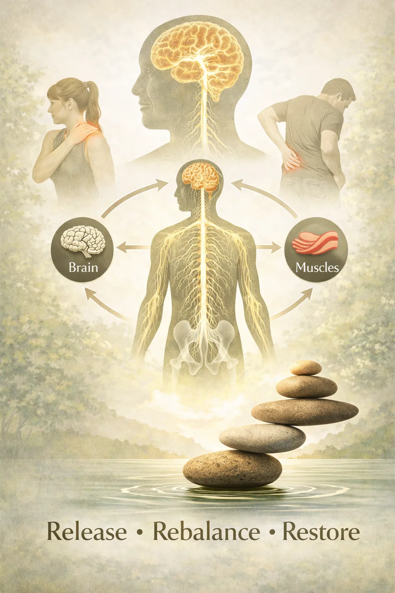
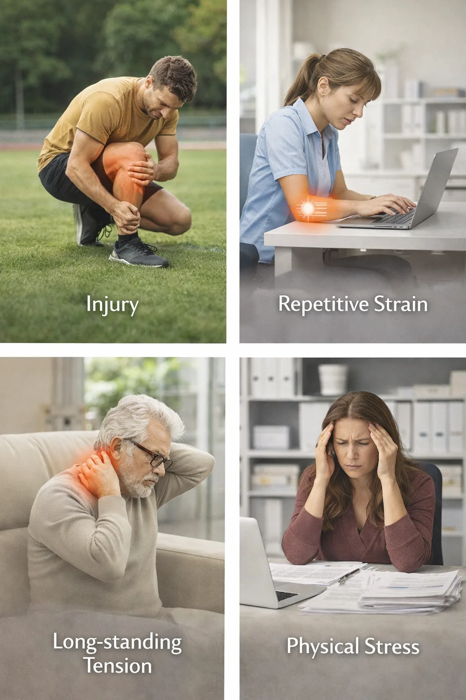
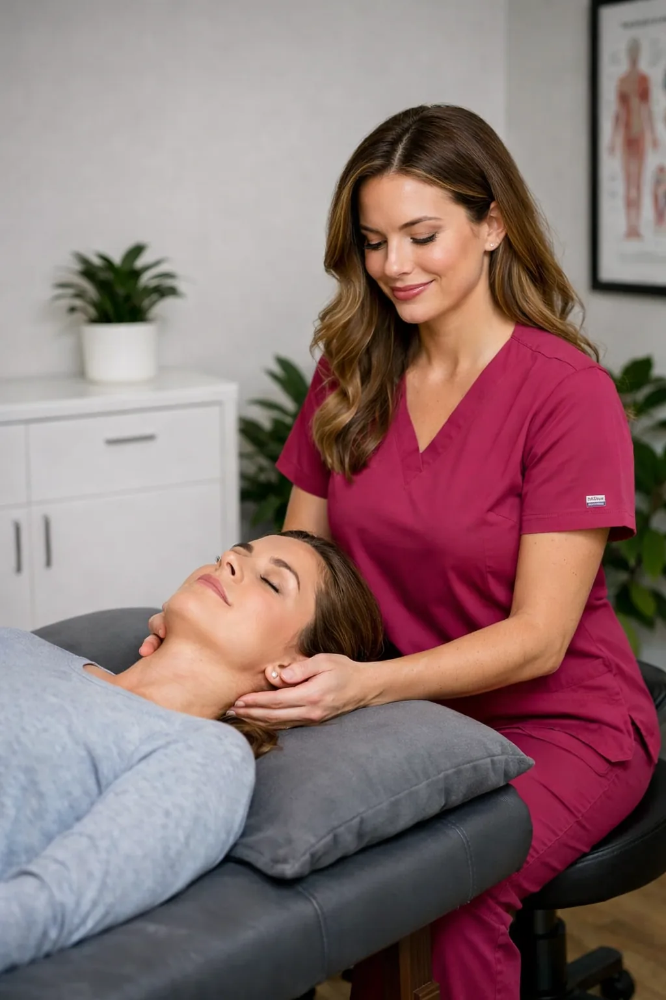
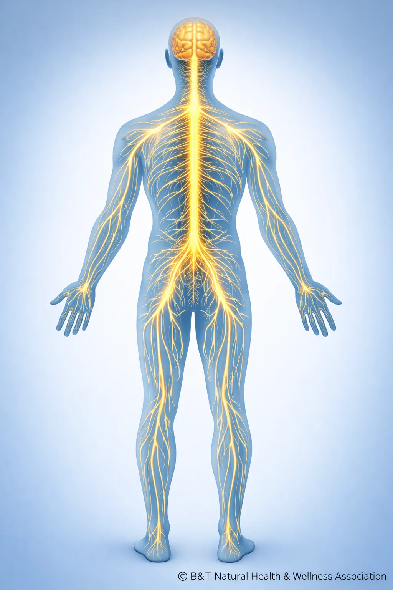
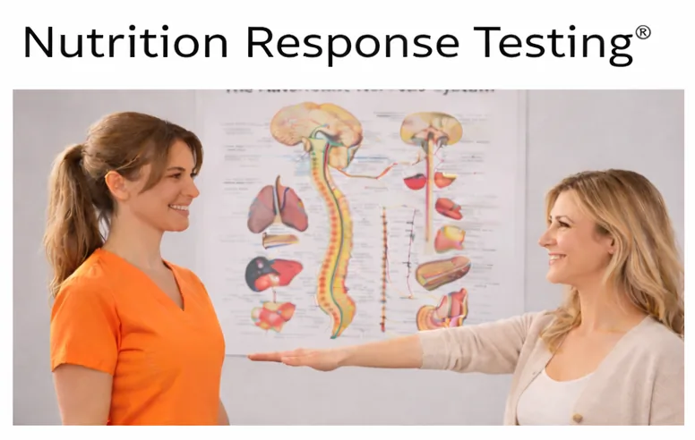
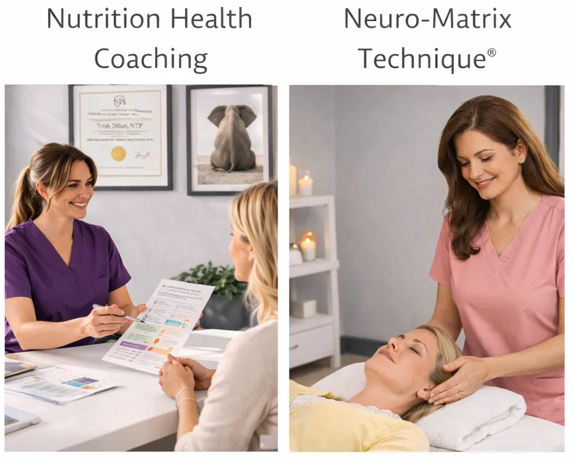

Neuro-Matrix Technique® is a gentle, non-invasive approach designed to help identify patterns in how the body responds to physical stress, tension, and movement.
Many individuals explore this approach after experiencing ongoing discomfort or recurring patterns that haven’t fully resolved through other methods. The goal is not to force change, but to help the body recognize and shift patterns in a more natural, supported way.
The technique focuses on reflex pathways within the nervous system — the communication between the brain, nerves, and muscles that influence posture, movement, and protective tension responses throughout the body.
When the body experiences injury, repetitive strain, or prolonged stress, these patterns can sometimes remain active even after the original stress has passed. Neuro-Matrix Technique® works with these neurological reflexes to support the body’s natural processes and overall balance.

The nervous system constantly communicates with muscles, joints, and connective tissues throughout the body. This communication helps coordinate posture, movement, balance, and the body’s natural protective responses.
When the body experiences physical stress — such as injury, repetitive strain, or long-standing tension — the nervous system may maintain protective patterns designed to guard the affected area.
Sometimes these protective responses remain active even after the original stress has passed. When this occurs, the body may continue holding tension or restricted movement patterns.
Neuro-Matrix Technique® focuses on helping the nervous system recognize these patterns so the body can shift toward more balanced movement and reduced protective tension.

During a Neuro-Matrix Technique® session, the practitioner evaluates specific neurological reflex points related to communication between the brain, nervous system, and muscles.
These reflex points correspond to pathways that influence muscle tone, joint stability, and protective tension patterns within the body.
Neuro-Matrix Technique® also considers the role of the protective connective tissues that surround and support the brain and spinal cord. These tissues help stabilize and protect the central nervous system while influencing how tension and movement patterns are distributed throughout the body.
When these protective tissues are under prolonged stress — whether from injury, strain, or long-standing tension patterns — they may contribute to persistent tightness or sensitivity in different areas of the body.
Neuro-Matrix Technique® works with neurological reflex pathways that may help the body release these protective stress responses and support more balanced communication within the nervous system.
When a stress pattern is identified, gentle stimulation of certain reflex points may help the nervous system re-evaluate that pattern. This process can allow the body to release unnecessary protective tension and improve the way muscles and nerves communicate.
Many individuals describe the process as subtle, calm, and comfortable — often very different from more forceful approaches they may have experienced.
Rather than focusing on isolated areas of discomfort, this approach looks at how the body functions as a connected system.
Because the nervous system coordinates communication throughout the entire body, stress patterns in one area can sometimes influence other areas. By addressing neurological reflex pathways, Neuro-Matrix Technique® works with the body’s natural communication systems to support improved balance and adaptability.
This approach emphasizes supporting the body’s natural ability to adapt, self-regulate, and respond to stress more efficiently over time.

Individuals often explore Neuro-Matrix Technique® when they:
Each person’s experience is unique, and this approach is designed to support the body’s natural responses rather than force change.
At B&T Natural Health & Wellness, Neuro-Matrix Technique® is offered as part of our educational wellness services within our private membership association.
Our goal is to help members better understand how neurological stress patterns may influence how the body feels and functions, while providing supportive techniques that encourage the body’s natural adaptability.
This service can also complement the other wellness approaches offered within our association, allowing members to explore multiple supportive strategies for overall well-being.


We believe it's important to clearly explain the role of this approach.
Important Note:
Neuro-Matrix Technique® is an educational, wellness-focused approach intended to support general well-being through nutrition and lifestyle guidance. We do not diagnose, treat, prescribe, or cure medical conditions.
This approach is designed to complement, not replace, medical care. Clients are encouraged to continue working with their licensed healthcare providers for medical evaluation, diagnosis, and treatment when needed.
You don’t have to keep guessing what your body needs.
What to Expect:
Sessions are gentle and non-invasive
No forceful manipulation
Designed to be calm and supportive
Focused on helping you better understand your body

FAQs
Still have questions?
That’s completely normal.
Here are some of the most common things people ask before getting started.
B&T Natural Health & Wellness Association is a private, membership-based wellness organization that offers educational nutrition and lifestyle services. Our approach is non-invasive and holistic, designed to help individuals better understand nutritional and lifestyle-related stress patterns that may be influencing overall wellness.
We use educational methods such as Nutrition Response Testing® and Nutritional Health Coaching to support informed decision-making. Our services are intended to support general wellness and complement — not replace — medical care.
No. We do not diagnose, treat, prescribe for, or cure medical conditions. Our services are educational in nature and focused on nutrition and lifestyle support.
Clients are encouraged to consult with licensed healthcare providers for medical diagnosis, treatment, and medical decision-making.
Our primary services include:
Nutrition Response Testing® (NRT): a non-invasive, educational assessment method used to help observe patterns related to nutritional and lifestyle stress
Nutritional Health Coaching: personalized nutrition and lifestyle education focused on whole-food nutrition, practical guidance, and sustainable habits
All services are educational, non-invasive, and individualized.
The first step is determining whether you are a Nutrition Response Testing® case. If we determine that this approach is not appropriate for you, we will let you know upfront.
If you are a Nutrition Response Testing® case, it is our experience and professional opinion that this approach can provide valuable insight and guidance to support foundational wellness through individualized nutrition and lifestyle education.
Our approach is non-invasive, personalized, and education-focused. Rather than generalized programs or one-size-fits-all recommendations, we tailor guidance based on individual nutritional and lifestyle stress patterns.
We also prioritize clarity and transparency. If our services are not appropriate for you, we will tell you.
During the initial visit, we review your health history, wellness goals, and current concerns. If appropriate, Nutrition Response Testing® may be used to help observe nutritional stress patterns.
We then discuss whether our services may be a good fit and outline possible next steps based on your individual needs and preferences.
Results vary by individual. Our role is to provide personalized nutrition and lifestyle education intended to support general wellness.
We do not guarantee outcomes, as individual experiences depend on many factors including consistency, lifestyle choices, overall wellness status, and individual circumstances.
B&T Natural Health & Wellness Association operates as part of the Professional Wellness Alliance (PWA), a private membership community created to help protect access to holistic and natural wellness services.
Membership establishes a private relationship that allows us to offer non-invasive, educational wellness services responsibly within today’s regulatory environment. This structure supports transparency, protects both member and provider rights, and helps ensure continued access to the services we offer.
There is no charge for membership, and members may cancel at any time.
Yes. Our services are designed to complement medical care, not replace it.
Many members choose to work with us alongside their licensed healthcare providers.
The first step is completing the simple, one-page PWA membership agreement.
Next, you’ll schedule an initial consultation. This allows us to determine whether Nutrition Response Testing® is appropriate for you and whether our educational wellness services align with your goals.
© 2026 B&T Natural Health & Wellness Association — Private Membership Association.
Services provided by a Licensed Member Provider through the Professional Wellness Alliance.
Educational wellness services are available to members of B&T Natural Health & Wellness Association.
B&T Natural Health & Wellness Association is a private membership association. All services are educational in nature and intended to support general wellness through nutrition and lifestyle guidance. We do not diagnose, treat, prescribe, or cure medical conditions.
Information provided through Nutrition Response Testing®, Nutritional Health Coaching, and Neuro-Matrix Technique® is not intended to replace medical advice, diagnosis, or treatment and is designed to complement, not replace, care provided by licensed healthcare professionals. Members are encouraged to consult with their healthcare providers for medical concerns.
Wellness starts with understanding.